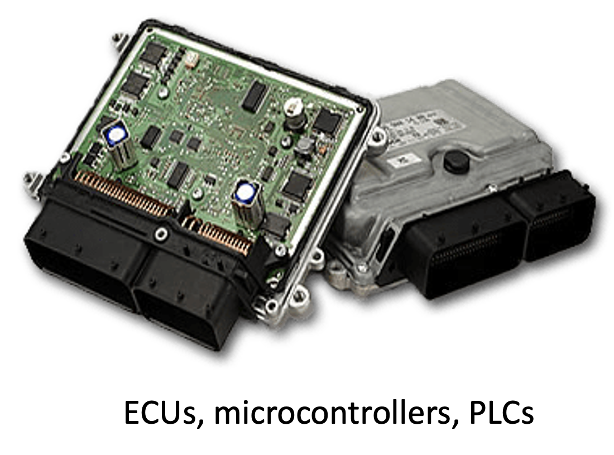
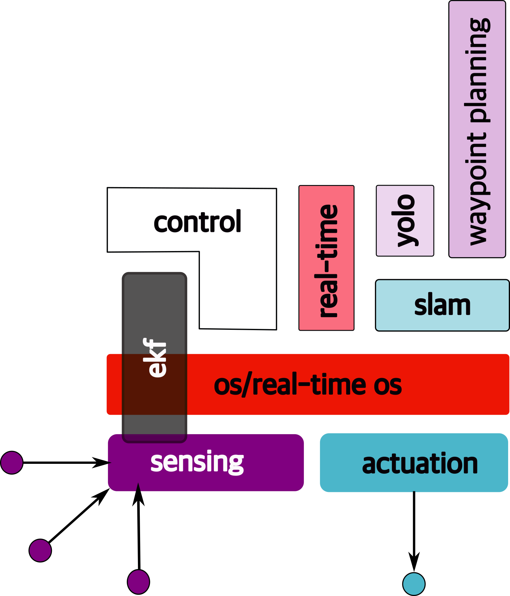
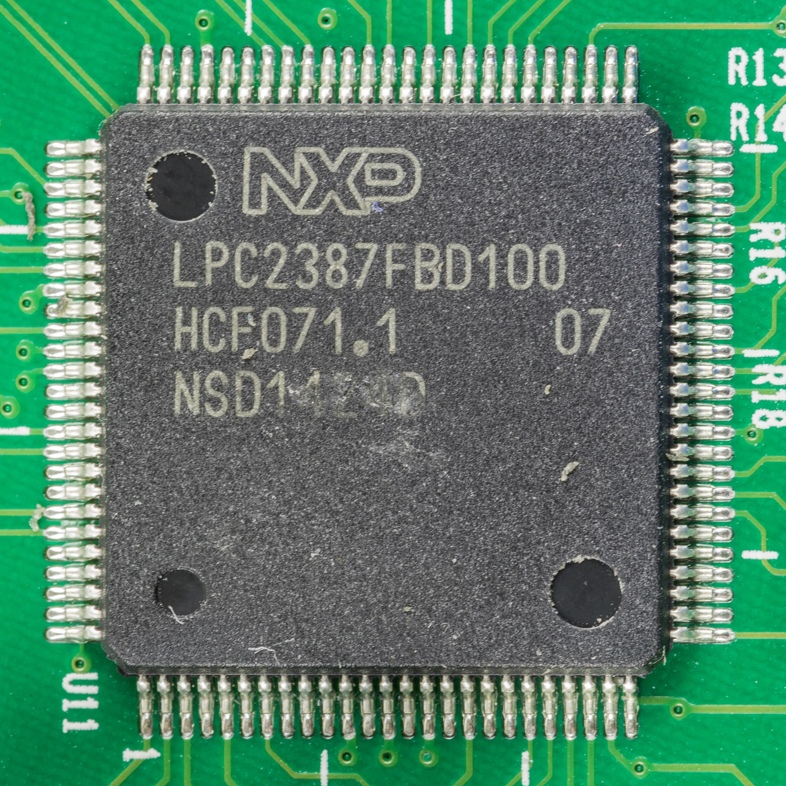
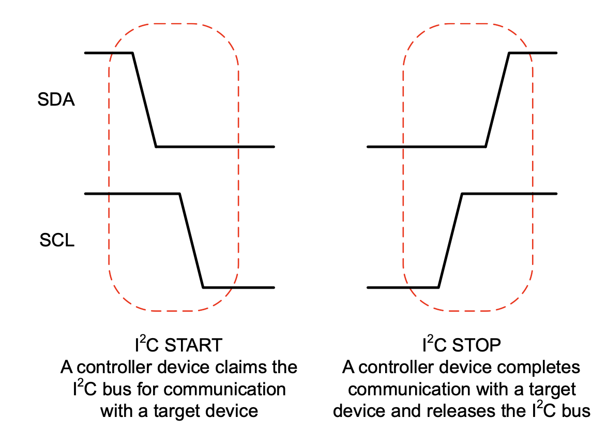

- 1 introduction
- 2 Embedded Architectures
1 introduction
1.1 autonomy
what is “autonomy”?
we see various examples of it…


1.1.1 what are the aspects of autonomy?
| perception | how do you “see” the world around you? |
| sensing | various ways to perceive the world around you (e.g, camera, LiDar) |
| compute | what do you “do” with the information about the world? |
| motion | do your computations result in any “physical” changes? |
| actuation | what “actions”, if any, do you take for said physical changes? |
| planning | can you do some “higher order” thinking (i.e., not just your immediate next move) |
1.2 let us define autonomy
| Autonomy is the ability to perform given tasks based on the system’s perception |
 |
1.3 autonomous systems
| cyber |  |
 |
 |
| physical |  |
 |
 |
hence, they fall under the class of systems → cyber-physical systems
1.4 sensors and actuators…
|
|
…are everywhere!
the embedded components → interactions with the real world
1.5 sensing and actuation in the real world
consider the following example of two cars…
the second car is approaching the first 
sensors → constantly gathering data/sensing
- periodic sensing

on detection (of other car) → quickly compute what to do
- periodic sensing
- computation

take physical action (actuation) → say by braking in time
- periodic sensing
- computation
- actuation

- periodic sensing
- computation
- actuation

“control”
Remember this → on detection (of other car) →
“quickly” compute → complete computation/actuation → before a deadline
This is a real-time system.
1.5.1 Come back to sensing
Multiple sensors in an autonomous vehicle → need to combine them somehow
sensor fusion
Once we have information from the sensors (fused or otherwise)…

We need state estimation (kalman filter, ekf).
1.6 Overview/Architecture of Autonomous Systems
So far, we’ve (briefly) talked about…
Sensing:

Actuation:

But the system includes…an operating system (OS) in there

and it includes real-time mechanisms.
We have briefly discussed, EKF:

note: ekf is versatile; can be used for sensor fusion, slam, etc.
All of it integrates with…control:

There are some real-time functions in there…

like braking, engine control.
Question: if we design such a system…
is it “autonomous”?
We are missing some “higher order” functionss from the perspective of the autonomous system:
- where am I?
- where do I need to go?
- how do I get there?
- what obstacles may I face?
- how do I avoid them?
let’s not forget the most important question of all…

why is gamora?
1.6.1 high-order functions
In order to answer the following, we need additional functionality. Let’s go through what that might be.
|
|
1.6.2 slam
Simultaneous localization and mapping → figure out where we are.

1.6.3 waypoint detection
Understand how to move in the right direction at the micro level, i.e., find waypoints.

1.6.4 yolo
Is it “you only live once”? Actually this stands for: “you only look once”. It is an object detection model that uses convolutional neural networks (cnns)

1.6.5 object avoidance
The objective is to avoid objects in the immediate path.

1.6.6 path planning
i.e., how to get to destination at the macro level → uses waypoints.

1.6.7 compute platform
To run all of these functions, we need low power, embedded platforms.

1.6.8 still some non-functional requirements remain
any guesses what they could be?
1.6.9 safety!
Essentially safety of → operator, other people, the
vehicle, environment This is cross-cutting
issue → affected

1.6.10 security
Security is another cross-cutting issue →

1.6.11 Course Structure
Hence this figure is a (loose) map of this course:
2 Embedded Architectures
Just like “autonomy” describing and “embedded system” is hard. What (typically) distinguishes it from other types of computer systems (e.g., laptops, servers or GPUs even) is that such systems are typically created for specific functionality and often remain fixed and operational for years, decades even.
Embedded systems often trade off between performance and other considerations such as power (or battery life), less memory, fewer peripherals, limited applications, smaller operating system (OS) and so on. There are numerous reasons for this – chief among them is predictability – designers need to guarantee that the system works correctly, and remains safe, all the time. Hence, it must be easy to certify 1 the entire system. This process ensures that the system operates safely.
2.1 The wcet problem
One piece of information that is required to ensure predictability and guarentee safety is worst-case execution time (WCET). The WCET/BCET is the longest/shortest execution time possible for a program, on a specific hardware platform – and it has to consider all possible inputs. WCET is necessary to ensure the “schedulability”, resource requirements and performance limits of embedded and real-time programs. There are lots of approaches to computing the WCET, e.g.,
- dynamic/empirical analysis → run the program lots of times (thousands, millions?) on the platform and measure it
- static analysis → analyze the program at compile time to compute the worst-case paths through the program
- hybrid → a combination of the two
- probabilistic → a combination of dynamic analysis+statistical methods
- ML-based methods → applying machine-learning to the problem
At a high-level, the execution time distributions of applications look like:

WCET analysis is a very active area of research and hundreds of papers have been written about it, since it directly affects the safety of many critical systems (aircraft, power systems, nuclear reactors, space vehicles and…autonomous systems).
There are structural challenges (both in software and hardware) that prevent the computation of proper wcet for anything but trivial examples. For instance, consider,
void main()
{
int max = 10 ;
int sum = 0;
for( int i = 0 ; i < max ; ++i)
sum += i ;
}How do you compute the WCET for this code? Say running on some known processor, P?
Well, there’s some information we need,
- how long each instruction takes to execute on P
- how many loop iterations?
- what is the startup/cleanup times for the program on P?
Let’s assume (from the manual for P), we get the following information,
1 void main() // startup cost = 100 cycles
2 {
3 int max = 15 ; // 10 cycles
4 int sum = 0; // 10 cycles
5 for( int i = 0 ; i < max ; ++i) // 5 cycles, once
6 sum += i ; // 20 cycles each iteration
7 } // cleanup cost = 120 cyclesSo, based on this, we can calculate the total time to execute this program:
wcet = startup_cost + line_3 + line_4 + loop_startup_cost + (line_6 * max) [1]
wcet = 100 + 10 + 10 + 5 + (20 * 15)
wcet = 425 cycles
Now consider this slight change to the above code:
void main( int argc, char* argv[] )
{
int max = atoi( argv[1] ) ; // convert the command line arg to max
int sum = 0;
for( int i = 0 ; i < max ; ++i) // how many iterations?
sum += i ;
}The problem is that equation [1] above fails since we no
longer know the value of max. Hence the
program can run for any arbitrary amount of time,
depending on the given input! Note that
none of the aforemention wcet methods will
help in this case since the input can be completely
arbitrary. Hence, the structure of the software code can
affect wcet calculations.
Another problem is that of hardware (and interactions between hardware and software). Now consider if we modify the original code as,
#define VERY_LARGE_ARRAY+SIZE 1>>18
void main()
{
int first_array[VERY_LARGE_ARRAY_SIZE] ;
int second_array[VERY_LARGE_ARRAY_SIZE] ;
int sum_first = 0;
int sum_second = 0;
for( int i = 0 ; i < VERY_LARGE_ARRAY_SIZE * 2 ; ++i)
{
if( i%2 )
first_sum += first_array[i/2] ;
else
second_sum += second_array[(int)((i/2)+1)] ;
}
}Now, while we can compute, using equation [1] the wcet
from the code perspective (since we know the loop runs for
VERY_LARGE_ARRAY_SIZE * 2 iterations), there
will be significant non-obvious hardware issues, in the
cache. Each iteration is accessing a
different large array. Hence, it will load the
cache with lines from that array and in the very next
iteration the other array will be loaded, also missing
in the cache. For instance,
| iteration | operation | cache state | reason |
|---|---|---|---|
| 1 | first_array loaded |
miss | evicts whatever was previously in cache |
| 2 | second_array loaded |
miss | evicts first_array due to
lack of space |
| 3 | first_array loaded again |
miss | evicts second_array due to
lack of space |
| … | |||
Hence, this program will constantly sufffer cache misses and since caches misses (and reloads) are expensive (in terms of time), the loop’s execution time will balloon out of control! Hence, even though we fixed the code issue (upper bound on number of iterations, hardware artifacts can change the wcet calculations). So now, we need to model cache behavior for each program and data variable! This is notoriously complicated even for the simplest of programs.
Other hardware designs further complicate matters, e.g.,
- processor pipelining
- prefetching
- branch prediction
- multithreading
- multicore systems
- memory buses
- networks-on-chip
- and too many others to recount here…
Any contemporary processor design that improves performance, turns out to be bad for wcet analysis. So, the fewer (or simpler versions of) these features, the better it is for the (eventual) safety and certification of the system.
This is one of the main reasons why embedded (and especially real-time) systems prefer simpler processors (simple pipelines, fewer complex features, simpler memory/cache architectures, if any) since they’re easier to analyze. In fact, many critical systems (e.g., aircraft, cars, etc.) use older processors (often designed in the 1980s and 1990s) – even the ones beind design today!
2.2 Embedded Processors
Just as embedded systems are varied, embedded processors come in a myriad of shapes and sizes as well. From the very small and simple (e.g., DSPs) to the very large and complex (modern multicore chips, some with GPUs!). Here is a (non-exhaustive) list of the types of embedded processors/architectures in use today:
- Microcontrollers
- Digital Signal Processors (DSPs)
- Microprocessors of various designs and architectures (e.g., ARM, x86)
- System-on-a-Chip (SoC)
- Embedded accelerators
- ASICs and FPGAs
2.2.1 Microcontrollers
According to Wikipedia,
“A microcontroller (MC, UC, or μC) or microcontroller unit (MCU) is a small computer on a single integrated circuit.”
These may be among the most common type of “processors” used in embedded systems. According to many studies, more than 55% of the world’s processors are microntrollers! Microcontrollers are typically used in small, yet critical, systems such as car engine control, implantable medical devices, thermal monitoring, fault detection and classification among millions of other applications.
Microcontrollers hardware features typically include,
| component | details |
|---|---|
| one (sometimes more) CPU cores | typically simple 4 or 8 bit
chips |
| small pipelined architectues | sometimes 2 or 4 stage
pipelines |
| some limited memory | typically a few hundred kilobytes, perhaps in the form of EEPROMs or FLASH |
| some programmable I/O | to interact with the real world |
| low operating frequencies | e.g., 4 KHz; simpler/older processors, yet
more predictable |
| low power consumption | in the milliwatts or microwatts ranges; might even be nanowatts when the system is sleeping |
| interrupts (some programmable) | often real-time (ficed/low latency) |
| several general-purpose I/O (GPIO) pins | for I/O |
| timers | e.g., a programmable interval timer (PIT) |
There are some additional features found on some microcontrollers, viz.,
| component | details |
|---|---|
| analog to digital (ADC) signal convertors | to convert incoming (real-world, sensor) data to a digital form that the uC can operate on |
| digital-to-analog (DAC) convertor | to do the opposite, convert from digital to analog signals to send outputs in that form |
| universal asynchronous transmitter/receiver (UART) | to receive/send data over a serial line |
| pulse width modulation (PWM) | so that the CPU can control motors (significant for us in autonomous/automotive systems), power systems, resistive loads, etc. |
| JTAG interace | debugging interface |
Some examples of popular microcontroller families:
 Atmel ATmega |

Microchip Technology |

Motorola (Freescale) |

NXP |
Microcontroller programs and data,
- are small –> must fit in memory (since very little expandable memory exists)
- often directly programmed in assembly!
- sometimes the assembly code might need hand tuning –> for both, performance as well as fitting into the limited memory
- C is another popular language
- no operating systems (or very rare)!
- sometimes have their own special-purpose programming languages or instructions
2.2.2 Digital Signal Processors (DSPs)
DSPs are specialized microcontrollers optimized for digital signal processing. They find wide use in audio processing, radar and sonar, speech recognition systems, image processing, satellites, telecommunications, mobile phones, televisions, etc. Their main goals are to isoloate, measure, compress and filter analog signals in the real world. They often have stringent real-time constraints.
The Texas Instruments DSP chip, TMS320 Series is one of the most famous example of this type of system:

Typical digital signal processing (of any kind) requires repetitive mathematical operations over a large number of samples, in real-time, viz., - analog to digital conversion - maniupulation (the core algorithm) - digital to analog conversion
Often, the entire process must be completed with low latency, even within a fixed deadline. They also have low power requirements since DSPs are often used in battery-constrained devices such as mobile phones. Hence, the proliferation of specialized DSP chips (instead of pure software implementations, which also exist; MATLAB has an entire DSP System Toolbox).
Typical DSP architecture/flow (credit: Wikipedia):

These types of chips typically have custom instructions
for optimizing certain (mathematical) operations (apart from
the typical add, subtract,
multiply and divide), e.g., -
saturate; caps the minimum or maximum value
that can be held in a fixed-point representation -
ed ; euclidian distance -
accumulate instructions ; for multiply-and-accumulate
operations, i.e., a ← a + (b * c)
See the Microchip instruction set details for more information for a typical DSP ISA.
DSPs require optimization of streaming data and hence, - require optimized memories and caches → fetch multiple data elements at the same time - code may need to be aware of, and explicitly manipulate caches - may have rudimentary OS but no virtual memory
2.2.3 Microprocessors
Microprocessors are, then, general-purpose chips (as opposed to microcontrollers and DSPs) that are also used extensively in embedded systems. They are used in systems that need more heavy duty computing/memory and/or more flexibility in terms of programming and management of the system. They use a number of commodity processor architectures (e.g,, ARM, Intel x86).
Main features of microprocessors:
| component | details |
|---|---|
| cores | single or multicore; powerful |
| pipelines | more complex pipelines; better performance, harder to analyze (e.g., wcet) |
| clock speeds | higher clock speeds; 100s of khz, or even
GHz |
| ISA | common ISA; well understood, not custom |
| memory | significant memory; megabytes, even gigabytes |
| cache hierarchies | multiple levels, optimized |
| power consumption | much higher, but can be reduced (e.g., via voltage and frequency scaling) |
| size, cost | often higher |
| interrupts, timers | more varied, easily programmable |
| I/O | more interfaces, including commodity ones like USB |
| security | often includes additional hardware security features, e.g., ARM TrustZone. |
The ARM M-85 Embedded Microprocessor architecture:

When compared to microcontrollers (or even SoCs), most microprpcessors do not include components such as DSPs, ADCs, DACs, etc. It is possible to augment the microprocessor to include this functionality → usually by connecting one or more microcontrollers to it!
On the software side, microprocessors typically have the most flexibility:
- general purpose operating systems (e.g., Linux, Android, Windows, UNIX, etc.)
- most programming languages and infrastructures (even Docker!)
- large number of tooling, analysis, debugging capabilities
- complex code can run, but increases analysis difficulty
Due to their power (and cost) these types of systems are only used when really necessary or in higher-end systems such as mobile phones and autonomous cars.
2.2.4 System-on-a-Chip (SoC)
An SoC integrates most components in and around a processor into a single circuit, viz.,
- processor/chip → could be a microcontroller or even a microprocessor
- memory and memory interfaces
- I/O devices
- buses (memory and I/O)
- storage (e.g., flash) and sometimes even secondary storage
- radio modems
- (sometimes) accelerators such as GPUs
All of these are placed on a single substrate.
SoCs are often designed in C++,
MATLAB, SystemC, etc. Once the
hardware architectures are defined, additional hardware
elements are written in hardware description languages,
e.g., register transfer levels (RTL) 2.
Additional components could include,
- DAC
- ADC
- radio and signal processing
- wireless modems
- programmable logic.
- networks on chip (NoC) 3
In some sense, an SoC is an integration of a processor with peripherals. New hardware elements
Some examples of modern SoCs:

Broadcom Soc from Raspberry Pi

Apple M1 SoC
The integration of all hardware components has some interesting side-effects:
| effect | benefit | problems |
|---|---|---|
| tight integration | better performance, fewer latencies | cannot replace individual components |
| custom code/firmware | better use of hardware | not reusable in other systems |
| custom software libraries | easier programming of SoC | reduces code reusability in other systems |
| low power consumption | better battery life, less heat | (potentially) slower |
Depending on the processor/microcontroller that sits at the center of the SoC, the software stack/capabilities can vary. Many commons SoCs exhibit the following software properties:
- usually use contemporary operating systems, though optimized for embedded/SoC systems → e.g., Raspbian aka Rasberry Pi OS. Hence, they can handle multiprocessing, virtual memory, different scheduling policies, etc.
- can be programmed using most common programming
languages →
C,C++,python,java, evenlisp!
The Raspberry Pi is a common example of a system that uses a Broadcom BCM series of SoCs. We use the BCM2711 SoC in our course for the Raspberry Pi 4-B.
2.2.5 Embedded Accelarators (e.g. GPU-enabled systems)
There are hardware platforms that include accelerators in embedded systems, e.g., GPUs, AI-enabled silicon, extra programmable FPGA fabric, security features, etc. The main idea is that certain computation can be offloaded to these accelerators while the main CPU continues to process other code/requests. The accelerators are specialized for certain computations (e.g., parallel matrix multiplications on GPUs, AES encryption). Some chips include FPGA fabric where the designer/user can implement their own custom logic/accelerators.
In a loose sense, the Navio2 can be considered as a hardware coprocessor for the Raspbery Pi.
The NVidia Jetson Orin is a good example of an AI/GPU focussed embedded processor:

This system’s specifications:
- 1300 MHz clock speeds
- 64 GB Memory
- 256 bit memory bus
- 204 GB/s bandwidth
- supports a variety of graphics features (DirectX, OpenGL, OpenCL, CUDA, Vulkan and Shader Models )
- maximum of 60W power
- 275 trillion operations/s (TOPS)!
These systems are finding a lot of use in autonomous systems since they pack so much processing power into such a small form factor
2.2.6 ASICs and FPGAs
Application-specific integrated circuits (ASICs) and field programmable gate arrays (FPGAs). These platforms combine the advantages of both, hardware (speed) and software (flexibility/programmability). They are similar, yet different. Both are semiconductor devices that include programmable logic gates but an ASIC is static – i.e., once the board has been “programmed” it cannot be changed while an FPGA, as the name implies, allows for “reprogramming”.
ASICs are custom-designed for specific applications and provide high efficiency and performance. FPGAs are reprogramamble devices that provide significant flexibility. Many designers also used it for prototyping hardware components (before they are eventually included either in the processors or custom ASICs). The choice between ASICs and FPGAs depends entirely on the application requirements and other factors such as cost.
2.2.6.1 ASICs
These are specialized semiconductor devices – to implement a custom function, e.g., cryptocurrency mining, nuclear reactor control, televisions. ASICs are tailored to their specific applications. Once created, it cannot be reprogrammed or modified. ASICs are created using a process known as photolithography, a method to prepare nanoparticles, that allows components to be “etched” on to a silicon wafer.
The ASIC design process, while expensive and time consuming, becomes valuable for high-volume products as the per-unit cost decrease when production nunbers increase.
| advantages | disadvantages |
|---|---|
| high performance | lack of flexibility |
| low power consumption | high initial costs |
| small form factor | long development time |
| ip protection | obsolescence risk |
| good for mass production | risks with manufacturing yields |
| can integrate multiple functions | design complexity |
2.2.6.2 FPGAs
These are also semiconductor devices but they can be preprogrammed to implement various circuits and functions. Designers can change the functionality after the curcuits have been embossed onto the hardware. Hence, they’re good for systems that might require changes at design time and rapid prototyping. An FPGA is a collection of programmable logic and interconnects. They include lookup tables (LUTs) and other parts that can be used to develop multiple, fairly wide-ranging, functions. The programmable blocks can be connected to each other via the interconnects. Some FPGAs even come with additional flash memory.
FPGAs are programmed using hardware description languages such as Verilog/VHDL.
| advantages | disadvantages |
|---|---|
| flexibility | lower performance |
| shorter development time | higher power consumption |
| upgradability | high design complexity |
| lower (initial) costs | higher per-unit costs |
| better processing capabilities | design complexity |
| lower obsolescence risks | larger form factor |
2.3 Communication and I/O
Embedded systems need to communicate and/or interface with various elements:
- the physical world via sensors and actuators
- computers for programming (of the embedded system) or for data transfer
- with other embedded systems/nodes
- handheld devices
- with the internet (either public or to access back end servers)
- satellites?
Hence a large number of communication standards and I/O interfaces have been developed over the years. Let’s look at a few of them:
- serial (UART) → e.g., RS 232
- synchronous → I2C, SPI
- general-purpose I/O → GPIO
- debugging interface → JTAG
- embedded internal communication → CAN
- universal connectivity → USB
- signal processing → ADC/DAC
- network → ethernet/WiFi
- others → radio, Bluetooth
2.3.1 UART | RS-232
Serial communication standards are used extensively across many domains, mainly due to their simplicity and low hardware overheads. The most common among these are the asynchronous serial communication systems.
From Wikipedia:
Asynchronous serial communication is a form of serial communication in which the communicating endpoints’ interfaces are not continuously synchronized by a common clock signal. Instead of a common synchronization signal, the data stream contains synchronization information in form of start and stop signals, before and after each unit of transmission, respectively. The start signal prepares the receiver for arrival of data and the stop signal resets its state to enable triggering of a new sequence.
The following figure shows a communication sample that demonstrates these principles:

We see that each byte has a start bit,
stop bit and eight data bits. The
last bit is often used as a parity bit. All of
these “standards” (i.e., the start/stop/parity bits) must be
agreed upon ahead of time.
A universal asynchronous receiver-transmitter (UART) then is a peripheral device for such asynchronous commnication; the data format and transmission speeds are configurable. It sends data bits one-by-one (from least significant to most). The precise timing is handlded by the communication channel.
The electric signalling levels are handled by an external driver circuit. Common signal levels:
Here we will focus on the RS-232 standard since it is most widely used UART signaling level standard today. The full name of the standard is: “EIA/TIA-232-E Interface Between Data Terminal Equipment and Data Circuit-Termination Equipment Employing Serial Binary Data Interchange” (“EIA/TIA” stands for the Electronic Industry Association and the Telecommunications Industry Association). It was introduced in 1962 and has since been updated four times to meet evolving needs.
The RS-232 is a complete standard in that it specifies,
- (common) voltage and signal levels
- (common) pin and wiring configurations
- (minimal) control information between host/peripherals
The RS-232 specifies the electrical, functional and mechanical characteristics to meet all of the above criteria.
For instance, the electrical characteristics are defined in the following figure:

Details:
- high level [logical
0] (aka “marking”) →+5Vto+15V(realistically+3Vto+15V) - low level [logical
1] (aka “spacing”) →-5Vto-15V(realistically-3Vto-15V)
Other properties also defined, e.g., “slew rate”, impedance, capacitive loads, etc.
The standard also defines the mechanical interfaces, i.e., the pin connector:

While the official standard calls for a 25-pin connector, it is rarely used. Instead, the 9-pin connector (shown on the right in the above figure) is in common use.
You can read more details about the standard here: RS 232
2.3.2 Synchronous | I2C and SPI
Synchronous Serial Interfaces (SSIs) are a widely used in industrial applications between a master device (e.g. controller) and a slave device (e.g. sensor). It is based on the RS-422 standards and has a high protocol efficiency as well multiple hardware implementations.
SSI properties:
- differential signalling
- simplex (i.e., unidirectional communication only)
- non-multiplexed
- point-to-point and
- uses time-outs to frame the data.
2.3.2.1 I2C
The Inter-Integrated Circuit (I2C, IIC, I2C) is a synchronous, multi-controller/multi-target (historically termed as multi-master/multi-slave), single-ended, serial communication bus. I2C systems are used for attaching low-power integrated circuits to processors and microcontrollers – usually for short distance or intra-board communication.
I2C components are found in a wide variety of products, e.g.,
- EEPROMs
- VGA/DVI/HDMI connectors
- NVRAM chips
- real-time clocks
- reading hardware monitors and sensors
- controlling actuators
- DAC/ADC
- controlling LCD/OLDEs displays
- changing computer display settings (contrast, brightness, etc.)
- controlling speaker volume
- and many many more
The main advantage of I2C is that a microcontroller can control a network of chips with just two general-purpose I/O pins (serial data line and a serial clock line) and software. A controller device can communicate with any target device through a unique I2C address sent through the serial data line. Hence the two signals are:
| line | voltage | description |
|---|---|---|
| serial data line (SDL) | +5V |
transmit data to or from target devices |
| serial clock line (SCL) | +3V |
synchronously clock data in or out of the target device |
Both are bidirectional and pulled up with resistors.
Here is a typical implementation of I2C:

An I2C chip example (used for controlling certain TV signals):

I2C is half-duplex communication where only a single controller or a target device is sending data on the bus at a time. In comparison, the serial peripheral interface (SPI) is a full-duplex protocol where data can be sent to and received back at the same time. An I2C controller device starts and stops communication, which removes the potential problem of bus contention. Communication with a target device is sent through a unique address on the bus. This allows for both multiple controllers and multiple target devices on the I2C bus.
I2C communication details (initiated from the controller device):
| condition | description |
|---|---|
I2C START |
the controller device first pulls the SDA low and then pulls the SCL low |
I2C STOP |
the SCL releases high and then SDA releases high |

I2C communication is split into: frames.
Communciation starts when one controller sends an
address frame after a START. This
is followed by one or more data frames, each
consisting of one byte. Each frame also has
an acknowledgement bit. An example of two I2C
communication frames:

You can read more at: I2C.
2.3.2.2 SPI
The Serial Peripheral Interface (SPI) has become the de facto standard for synchronous serial communication. It is used in embedded systems, especially between microcontrollers and peripheral ICs such as sensors, ADCs, DACs, shift registers, SRAM, etc.
The main aspect of SPI is that one main device orchestrates communication with one ore more sub/peripheral devices by driving the clock and chip select signals.
SPI interface properties:
- synchronous
- full duplex
- main-subnode (formerly called “master-slave”)
- data from the main or the subnode is synchronized on the rising or falling clock edge
- main and subnode can transmit data at the same time
- interface can be 3 or 4-wire (4 wire version is more popular)
| microchip SPI | basic SPI Interface |
|---|---|
 |
 |
The SPI interface contains the following wires:
| signal | description | function |
|---|---|---|
SCLK |
serial clock | clock signal from main |
CS |
chip/serial select | To select which host to communicate with |
MOSI |
main out, subnode In | serial data out (SDO) for host to target communication |
MISO |
main in, subnode Out | serial data in (SDI) for target to host communication |
The main node generates the clock signal. Data
transmissions between main ahd sub nodes is synchronized by
that clock signal generated by main. SPI devices support
much higher clock frequencies than I2C. The
CS signal is used to select the subnode. Note
that this is an active low signal,
i.e., a low (0) is a selection and a
high (1) is a disconnect. SPI is a full-duplex
interface; both main and subnode can send data at the same
time via the MOSI and MISO lines respectively. During SPI
communication, the data is simultaneously transmitted
(shifted out serially onto the MOSI/SDO bus) and received
(the data on the bus (MISO/SDI) is sampled or read in).
Example: the following example demonstrates the significant savings and simplification in systems design (reduce the number of GPIO pins required).
Consider the ADG1412 switch being managed by a microcontroller as follows:

Now, as the number of switches increases, the requirement
on GPIO pins also increases significantly. A
4x4 configuration requires 16 GPI
pins, thus reducing the number of pins available for the
microcontroller for other tasks, as follows:

One approach to reduce the number of pins would be to use a serial-to-parallel convertor:

This reduces the pressure on the number of GPIO pins but still introduces additional circuitry.
Using an SPI-enabled microcontroller reduces the number of GPIOs required and and eliminates the overheads of the needing additional chips (serial-to-paralle convertor):

In fact, using a different SPI configuration (“daisy-chain”), we can optimize the GPIO count even further!

You can read more about SPI here.
2.3.3 General-Purpose I/O (GPIO)
A GPIO is a signal pin on an integrated circuit or board that can be used to perform digital I/O operations. By design, it has no predefined purpose → can be used by hardware/software developers to perform functions they choose, e.g.,
- GPIO pins can be enabled or disabled.
- GPIO pins can be configured to be input or output.
- input values are readable, often with a 1 representing a high voltage, and a 0 representing a low voltage.
- input GPIO pins can be used as “interrupt” lines, which allow a peripheral board connected via multiple pins to signal to the primary embedded board that it requires attention.
- output pin values are both readable and writable.
GPIOs can be implemented in a variety of ways,
- as a primary function of the microcontrollers, e.g., Intel 8255
- as an accessory to the chip
While microcontrollers may use GPIOs are their primary external interface, many a time the pins may be capable of other functions as well. In such instances, it may be necessary to configure the pins using other functions.
Some examples of chips with GPIO pins:
| Intel 8255 | PIC microchip | ASUS Tinker |
|---|---|---|
 |
 |
 |
| 24 GPIO pins | 29 GPIO pins | 28 GPIO pins |
GPIOs are used in a diverse variety of applications, limited only by the electrical and timing specifications of the GPIO interface and the ability of software to interact with GPIOs in a sufficiently timely manner.
Some “properties”/applications of GPIOs:
- GPIOs use standard logic levels and cannot supply significant current to output loads
- high-current output buffers or relays can be used to control high-power devices
- input buffers, relays, or opto-isolators translate incompatible signals to GPIO logic levels
- GPIOs can control or monitor other circuitry on a board, such as enabling/disabling circuits, reading switch states, and driving LEDs
- multiple GPIOs can implement bit banging communication interfaces like I²C or SPI
- GPIOs can control analog processes via PWM, adjusting motor speed, light intensity, or temperature
- PWM signals from GPIOs can be converted to analog control voltages using RC filters
GPIO interfaces vary widely. Most commonly, they’re simple groups of pins that can switch between input/output. On the other hand, each pin can be set up differently → set up/accept/source different voltages/drive strengths/pull ups and downs.
Programming the GPIO:
- usually pin states are exposed via different interfaces, e.g., memory-mapped I/O peripherals or dedicated I/O port instructions
- input values can be used as interrupts (IRQs)
For more information on programming/using GPIOs, read these: GPIO setup and use, Python scripting the GPIO in Raspberry Pis, general purpose I/O, GPIO setup in Raspberry Pi.
Talk about: - wcet (and why it matters) –> simpler processors, older ones - types of embedded processors –> microcontrollers, microprocessors, dsp, SoCs (include Broadcom chip on Pi), ARM, NVidia Jetson, ASIC, FPGA - Should we talk about pipelines and memory (?) - Communication standards –> Serial (e.g., RS 232). Synchronous (I2C?), USB, Network (Ethernet, WiFi), CAN, GPIO, ADC/DAC, JTAG - Drill into Raspberry Pi and Navio –> their architecture and communication interfaces